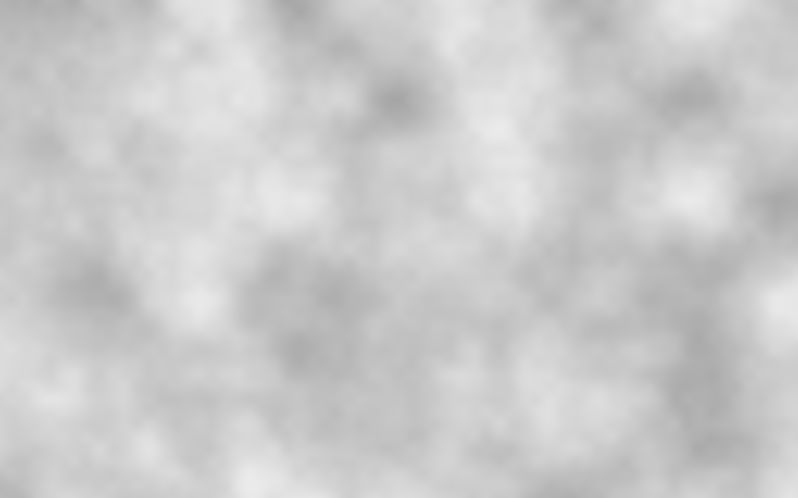

Perlin noise is a procedural noise function used to generate smooth pseudo-random patterns. Unlike white noise, where every pixel is completely independent, Perlin noise changes gradually across space.

Perlin noise is widely used in computer graphics and procedural generation. Because of its smooth behavior Perlin noise is widely used in computer graphics and procedural generation for simulating natural patterns such as:
Let's look at a small p5.js example of Perlin noise in action. This code generates a simple cloud-like texture using Perlin noise. The idea is to sample smooth pseudo-random values and convert them into pixel brightness.
function setup() {
createCanvas(800, 500);
const noiseScale = 0.01;
const cloudBrightnessMin = 150;
const cloudBrightnessMax = 255;
for (let y = 0; y < height; y++) {
for (let x = 0; x < width; x++) {
const noiseValue = noise(x * noiseScale, y * noiseScale);
const brightness = map(
noiseValue,
0,
1,
cloudBrightnessMin,
cloudBrightnessMax
);
stroke(brightness);
point(x, y);
}
}
}
function draw() {}
A few parameters from this code have a big impact on how the final texture looks.
| Variable | What it does |
|---|---|
| noiseScale | Controls the size of the noise pattern. Smaller values create larger and smoother shapes. |
| cloudBrightnessMin | The minimum brightness of the clouds. This prevents very dark areas. |
| cloudBrightnessMax | The maximum brightness of the clouds. It controls how bright the clouds can be. |
| noiseValue | A smooth random value generated by the Perlin noise function. The value is between 0 and 1. |
| cloudBrightness | The final brightness value used for the pixel. |